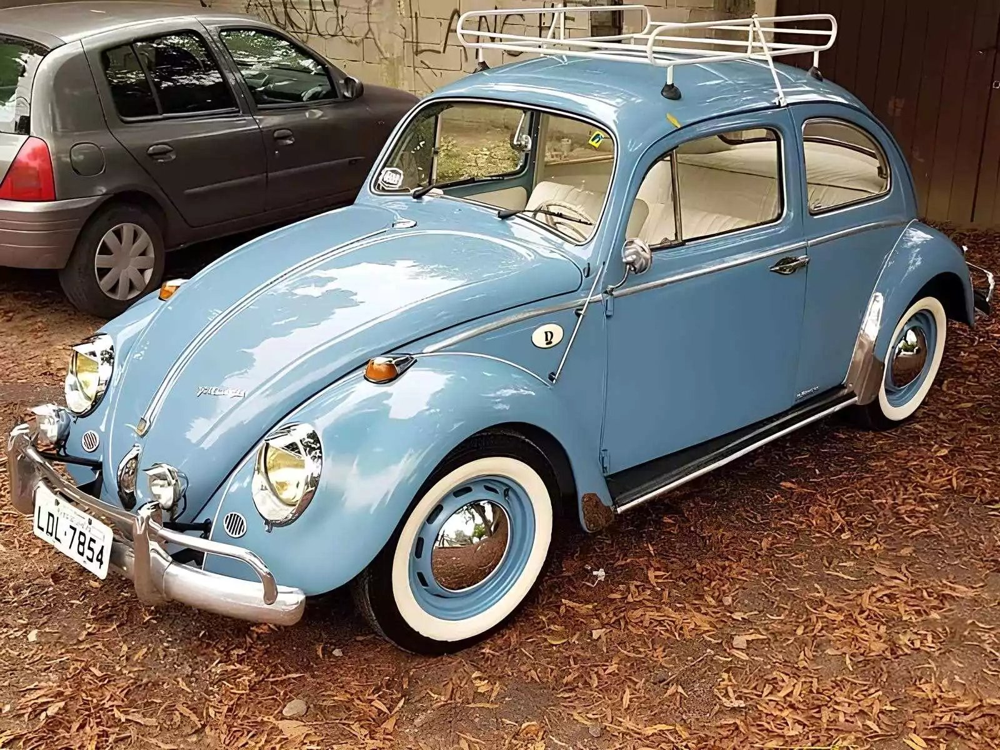
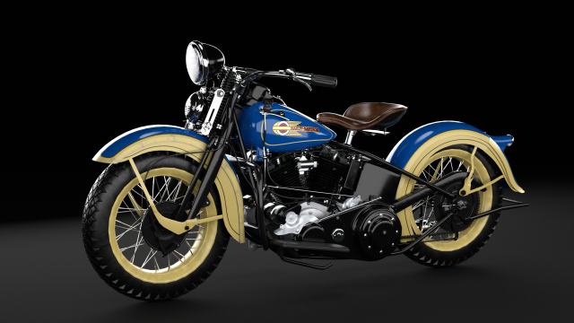

Carros e Motos Antigos: Um Portal para a História Automotiva
Um Legado de Elegância e Inovação
Ford Modelo T (1908)
Detalhes Técnicos
- Motor: 2.9L 4 cilindros em linha
- Potência: 20 HP
- Transmissão: Manual de 2 velocidades
- Peso: 540 kg
- Velocidade Máxima: 72 km/h
- Combustível: Gasolina
- Produção: 1908 - 1927
Fusca 1967

Detalhes Técnicos
- Motor: 1.2L 4 cilindros boxer
- Potência: 34 HP
- Transmissão: Manual de 4 velocidades
- Peso: 840 kg
- Velocidade Máxima: 115 km/h
- Combustível: Gasolina
- Produção: 1938 - 2003 (no Brasil até 1996)
Harley-Davidson Knucklehead (1940)

Detalhes Técnicos
- Motor: V-Twin 998 cc
- Potência: 40 HP
- Transmissão: Manual de 4 velocidades
- Peso: 250 kg
- Velocidade Máxima: 145 km/h
- Combustível: Gasolina
- Produção: 1936 - 1947